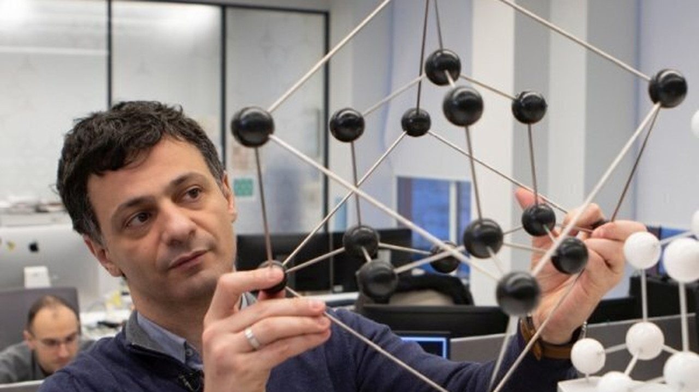

Артём Оганов
Кристаллограф, химик, материаловед, профессор РАН
Этот разговор стал главой книги
«Ты сам — главный научный проект» — личное обращение героя к читателю, цитаты,
опоры и блок «Возьми с собой».
Читать главу →
Читать главу →

01О герое
Кристаллограф, профессор РАН Артём Оганов — о термояде, в который он верит, и квантовом компьютере, в который пока нет, и о том, что случится с университетами, если отнестись к интересам каждого студента всерьёз.
02Ключевые тезисы
- Человек должен найти свой путь, а не копировать чужую траекторию.
- Главный проект человека — он сам: себя нужно строить красиво и ответственно.
- Учёный жив, пока продолжает изучать, размышлять и двигаться вперед.
- Образование должно поддерживать индивидуальность, а не делать всех одинаковыми.
- Науке и бизнесу нужны люди-мосты, которые переводят идеи в реальные задачи.
03Возьми с собой
Что применить
Спроси себя: я сейчас строю себя или просто плыву по инерции?
Собирай наставников шире: учиться можно у учителей, родителей, культур, книг, лекций и биографий.
Сохраняй любопытство — без него не будет ни науки, ни развития.
Цитаты
Важно открыть свой путь.
— Артём Оганов
Счастье — это когда ты можешь реализовать и приумножить свои способности.
— Артём Оганов
Вы — это и есть ваш главный научный проект.
— Артём Оганов